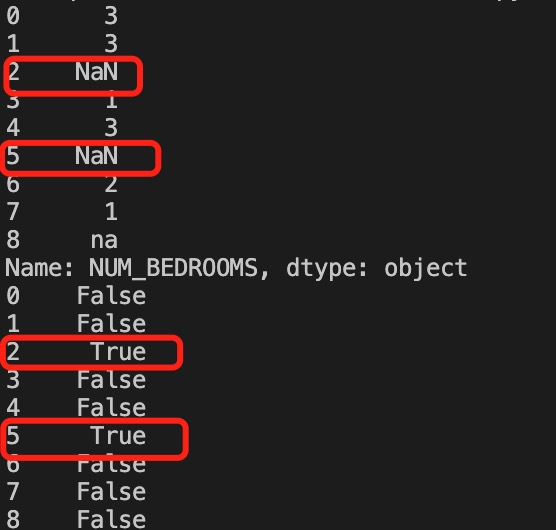
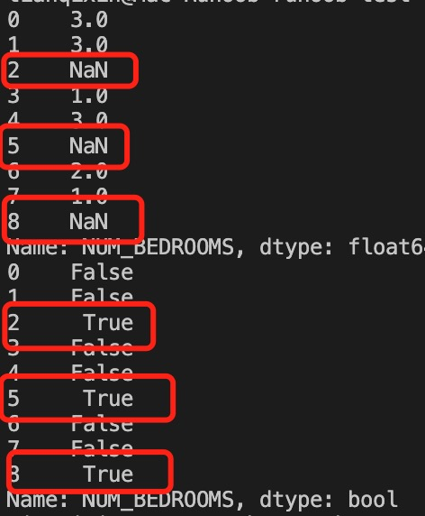
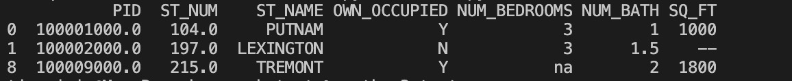

Pandas データクリーニング
データクリーニングとは、不要なデータを処理するプロセスです。
多くのデータセットには、データの欠損、データ形式のエラー、エラーデータ、重複データなどが存在します。データ分析をより正確にするには、これらの不要なデータを処理する必要があります。
データクリーニングと前処理の一般的な手順：
-
欠損値の処理：欠損値を特定して補完するか、欠損値を含む行/列を削除します。
-
重複データの処理：重複データをチェックして削除し、各データが一意であることを確認します。
-
異常値の処理：極端な値や誤った値などの異常値を特定して処理します。
-
データ形式の変換：データ型の変換や単位変換（例：日付形式の変換）を行います。
-
標準化と正規化：数値データを標準化（例：Z-score）または正規化（例：Min-Max）します。
-
カテゴリデータのエンコーディング：カテゴリ変数を数値形式に変換します。一般的な方法には、One-Hot エンコーディングやラベルエンコーディングがあります。
-
テキスト処理：テキストデータをクリーニングします。ストップワードの除去、ステミング、トークン化などを行います。
-
データサンプリング：データセットからサンプルを抽出するか、オーバーサンプリング/アンダーサンプリングによってクラスの不均衡を処理します。
-
特徴量エンジニアリング：新しい特徴量を作成したり、無関係な特徴量を削除したり、重要な特徴量を選択したりします。
このチュートリアルでは、Pandas パッケージを使用してデータクリーニングを行います。
この記事で使用するテストデータproperty-data.csvは次のとおりです：

上の表には、4種類の欠損データが含まれています：
- n/a
- NA
- —
- na
Pandas で欠損値をクリーニングする
欠損値を含む行を削除する場合は、dropna()メソッドを使用できます。構文は次のとおりです：
DataFrame.dropna(axis=0, how='any', thresh=None, subset=None, inplace=False)
パラメータの説明：
- axis：デフォルトは0、欠損値があると行全体を削除します。パラメータをaxis＝1に設定すると、欠損値があると列全体を削除します。
- how：デフォルトは'any'、行（または列）内のいずれかのデータに NA が出現すると行全体を削除します。設定する場合how='all'、行（または列）がすべて NA の場合のみ行全体を削除します。
- thresh：保持するために必要な非欠損値の数を設定します。
- subset：確認したい列を設定します。複数の列の場合は、列名のリストをパラメータとして使用できます。
- inplace：True に設定すると、計算された値を以前の値に直接上書きして None を返し、ソースデータを変更します。
我々はisnull()各セルが空かどうかを判断できます。
例
df = pd.read_csv('property-data.csv')
print (df['NUM_BEDROOMS'])
print (df['NUM_BEDROOMS'].isnull())
上記の例の出力結果は次のとおりです：

上記の例では、Pandas が n/a と NA を欠損データとして扱い、na は欠損データではないため、要件を満たしていません。欠損データの型を指定できます：
例
missing_values = ["n/a", "na", "--"]
df = pd.read_csv('property-data.csv', na_values = missing_values)
print (df['NUM_BEDROOMS'])
print (df['NUM_BEDROOMS'].isnull())
上記の例の出力結果は次のとおりです：

次の例では、欠損データを含む行を削除する方法を示します。
例
df = pd.read_csv('property-data.csv')
new_df = df.dropna()
print(new_df.to_string())
上記の例の出力結果は次のとおりです：

注意：デフォルトでは、dropna() メソッドは新しい DataFrame を返し、ソースデータを変更しません。
ソースデータの DataFrame を変更する場合は、inplace = Trueパラメータを使用できます：
例
df = pd.read_csv('property-data.csv')
df.dropna(inplace = True)
print(df.to_string())
上記の例の出力結果は次のとおりです：
指定した列に欠損値がある行を削除することもできます：
例
ST_NUM 列のフィールド値が空の行を削除します：
df = pd.read_csv('property-data.csv')
df.dropna(subset=['ST_NUM'], inplace = True)
print(df.to_string())
上記の例の出力結果は次のとおりです：

我々はまたfillna()メソッドを使用していくつかの空フィールドを置き換えることができます：
例
12345 を使用して空フィールドを置き換えます：
df = pd.read_csv('property-data.csv')
df.fillna(12345, inplace = True)
print(df.to_string())
上記の例の出力結果は次のとおりです：

特定の列を指定してデータを置き換えることもできます：
例
12345 を使用して PID の欠損データを置き換えます：
df = pd.read_csv('property-data.csv')
df['PID'].fillna(12345, inplace = True)
print(df.to_string())
上記の例の出力結果は次のとおりです：

空のセルを置き換える一般的な方法は、列の平均値、中央値、または最頻値を計算することです。
Pandas はmean()、median()とmode()メソッドで列の平均値（すべての値を合計した平均）、中央値（並べ替えた後に中央に位置する値）、最頻値（最も頻繁に出現する値）を計算します。
例
mean() メソッドを使用して列の平均値を計算し、空のセルを置き換えます：
df = pd.read_csv('property-data.csv')
x = df["ST_NUM"].mean()
df["ST_NUM"].fillna(x, inplace = True)
print(df.to_string())
上記の例の出力結果は次のとおりです。赤枠が計算された平均値で置き換えられた空のセルです：

例
median() メソッドを使用して列の中央値を計算し、空のセルを置き換えます：
df = pd.read_csv('property-data.csv')
x = df["ST_NUM"].median()
df["ST_NUM"].fillna(x, inplace = True)
print(df.to_string())
上記の例の出力結果は次のとおりです。赤枠が計算された中央値で置き換えられた空のセルです：

例
mode() メソッドを使用して列の最頻値を計算し、空のセルを置き換えます：
df = pd.read_csv('property-data.csv')
x = df["ST_NUM"].mode()
df["ST_NUM"].fillna(x, inplace = True)
print(df.to_string())
上記の例の出力結果は次のとおりです。赤枠が計算された最頻値で置き換えられた空のセルです：

Pandas で形式エラーのデータをクリーニングする
データ形式が誤っているセルは、データ分析を困難にし、場合によっては不可能にします。
空のセルを含む行を処理するか、列内のすべてのセルを同じ形式のデータに変換することで対応できます。
次の例では日付をフォーマットします：
例
# 3番目の日付は形式が正しくありません
data = {
"Date": ['2020/12/01', '2020/12/02' , '20201226'],
"duration": [50, 40, 45]
}
df = pd.DataFrame(data, index = ["day1", "day2", "day3"])
df['Date'] = pd.to_datetime(df['Date'], format='mixed')
print(df.to_string())
上記の例の出力結果は次のとおりです：
Date duration
day1 2020-12-01 50
day2 2020-12-02 40
day3 2020-12-26 45
Pandas でエラーデータをクリーニングする
データエラーも非常に一般的なケースです。エラーデータを置き換えたり削除したりできます。
次の例では、誤った年齢データを置き換えます：
例
person = {
"name": ['Google', 'サンプル' , 'Taobao'],
"age": [50, 40, 12345] # 12345 の年齢データは誤りです
}
df = pd.DataFrame(person)
df.loc[2, 'age'] = 30 # データを修正する
print(df.to_string())
上記の例の出力結果は次のとおりです：
name age
0 Google 50
1 サンプル 40
2 Taobao 30
条件文を設定することもできます：
例
age が 120 より大きいものを 120 に設定します：
person = {
"name": ['Google', 'サンプル' , 'Taobao'],
"age": [50, 200, 12345]
}
df = pd.DataFrame(person)
for x in df.index:
if df.loc[x, "age"] > 120:
df.loc[x, "age"] = 120
print(df.to_string())
上記の例の出力結果は次のとおりです：
name age
0 Google 50
1 サンプル 120
2 Taobao 120
エラーデータの行を削除することもできます：
例
age が 120 より大きいものを削除します：
person = {
"name": ['Google', 'サンプル' , 'Taobao'],
"age": [50, 40, 12345] # 12345 の年齢データは誤りです
}
df = pd.DataFrame(person)
for x in df.index:
if df.loc[x, "age"] > 120:
df.drop(x, inplace = True)
print(df.to_string())
上記の例の出力結果は次のとおりです：
name age
0 Google 50
1 サンプル 40
Pandas で重複データをクリーニングする
重複データをクリーニングしたい場合は、duplicated()とdrop_duplicates()メソッドを使用できます。
対応するデータが重複している場合、duplicated()True が返され、それ以外の場合は False が返されます。
例
person = {
"name": ['Google', 'サンプル', 'サンプル', 'Taobao'],
"age": [50, 40, 40, 23]
}
df = pd.DataFrame(person)
print(df.duplicated())
上記の例の出力結果は次のとおりです：
0 False 1 False 2 True 3 False dtype: bool
重複データを削除するには、drop_duplicates()メソッドを直接使用できます。
例
persons = {
"name": ['Google', 'サンプル', 'サンプル', 'Taobao'],
"age": [50, 40, 40, 23]
}
df = pd.DataFrame(persons)
df.drop_duplicates(inplace = True)
print(df)
上記の例の出力結果は次のとおりです：
name age
0 Google 50
1 サンプル 40
3 Taobao 23
よく使うメソッドと説明
データクリーニングと前処理の一般的な方法：
| 操作 | 方法/手順 | 説明 | よく使う関数/メソッド |
|---|---|---|---|
| 欠損値の処理 | 欠損値の補完 | 指定された値（例：平均値、中央値、最頻値など）を使用して欠損値を補完します。 | df.fillna(value) |
| 欠損値の削除 | 欠損値を含む行または列を削除します。 | df.dropna() | |
| 重複データの処理 | 重複データの削除 | DataFrame 内の重複行を削除します。 | df.drop_duplicates() |
| 異常値の処理 | 異常値の検出（統計的手法に基づく） | Z-score または IQR 法を使用して異常値を特定し処理します。 | カスタム関数（例：Z-score または IQR に基づく） |
| 異常値の置き換え | 適切な値（例：平均値または中央値）を使用して異常値を置き換えます。 | カスタム関数（例：異常値の置き換え） | |
| データ形式の変換 | データ型の変換 | データ型をある型から別の型に変換します。例：文字列を日付に変換します。 | df.astype() |
| 日時形式の変換 | 文字列または数値を日時型に変換します。 | pd.to_datetime() | |
| 標準化と正規化 | 標準化 | データを平均0、標準偏差1の分布に変換します。 | StandardScaler() |
| 正規化 | データを指定された範囲（例: [0, 1]）にスケーリングします。 | MinMaxScaler() | |
| カテゴリデータのエンコーディング | ラベルエンコーディング | カテゴリ変数を整数形式に変換します。 | LabelEncoder() |
| ワンホットエンコーディング（One-Hot Encoding） | 各カテゴリを新しいバイナリ特徴量に変換します。 | pd.get_dummies() | |
| テキストデータ処理 | ストップワードの除去 | テキストから重要でない単語（"the"、"is" など）を除去します。 | カスタム関数（基づくnltk 或 spaCy） |
| ステミングと見出し語化（レンマ化） | 語幹を抽出するか、単語の基本形を復元します。 | nltk.stem.PorterStemmer() | |
| トークン化（分かち書き） | テキストを単語または部分語（サブワード）に分割します。 | nltk.word_tokenize() | |
| データサンプリング | ランダムサンプリング | データから一定割合のサンプルをランダムに抽出します。 | df.sample() |
| オーバーサンプリングとアンダーサンプリング | オーバーサンプリング（少数クラスのサンプルを複製）またはアンダーサンプリング（多数クラスのサンプルを削減）によって、データセット内のクラス分布を均衡させます。 | SMOTE()（オーバーサンプリング）；RandomUnderSampler()（アンダーサンプリング） | |
| 特徴量エンジニアリング | 特徴量選択 | ターゲット変数に影響を与える特徴量を選択し、冗長または無関係な特徴量を除去します。 | SelectKBest() |
| 特徴量抽出 | 元のデータから新しい特徴量を作成し、モデルの予測能力を向上させます。 | PolynomialFeatures() | |
| 特徴量スケーリング | 数値特徴量を同じ桁数（スケール）になるようスケーリングします。 | MinMaxScaler() 、 StandardScaler() | |
| カテゴリ特徴量のマッピング | 特徴量マッピング | カテゴリ変数を対応する数値エンコーディングにマッピングします。 | カスタムマッピング関数 |
| データの結合と連結 | データのマージ | 複数のDataFrameを特定の列に基づいてマージします。内部結合、外部結合、左結合、右結合などに対応しています。 | pd.merge() |
| データの連結 | 複数のDataFrameを行または列方向に連結します。 | pd.concat() | |
| データの再形成（リシェイプ） | ピボットテーブル | データを特定の次元に基づいてグループ化し、集計結果を計算します。 | pd.pivot_table() |
| データ変形 | データの形状を変更します。例えば、ロング形式からワイド形式へ、またはワイド形式からロング形式へ変換します。 | df.melt() 、 df.pivot() | |
| データ型の変換と処理 | 文字列処理 | 文字列データを処理します。スペースの除去、大文字小文字の変換などを行います。 | str.replace() 、 str.upper() 等 |
| グループ集計 | 特定の特徴量に基づいてグループ化した後に集計計算を行います。 | df.groupby() | |
| 欠損値の予測補完 | モデルを使用して欠損値を予測して補完 | 機械学習モデル（例: 回帰モデル）を使用して欠損値を予測し、欠損データを補完します。 | カスタムモデル（例:sklearn.linear_model.LinearRegression） |
| 時系列処理 | 時系列の欠損値補完 | 時系列の手法（前方補完、後方補完など）を使用して欠損値を補完します。 | df.fillna(method='ffill') |
| ローリングウィンドウ計算 | スライディングウィンドウを使用して時系列データの統計計算（例: 平均、標準偏差など）を行います。 | df.rolling(window=5).mean() | |
| データ変換とマッピング | データのマッピングと置換 | データ内の特定の値を他の値に置換します。 | df.replace() |
欠損値の補完：
例
# サンプルデータ
data = {'Name': ['Alice', 'Bob', 'Charlie', None],
'Age': [25, 30, None, 35],
'City': ['New York', 'Los Angeles', 'Chicago', 'Houston']}
df = pd.DataFrame(data)
# 欠損している "Age" を平均値で補完
df['Age'].fillna(df['Age'].mean(), inplace=True)
print(df)
出力：
Name Age City
0 Alice 25.0 New York
1 Bob 30.0 Los Angeles
2 Charlie 30.0 Chicago
3 None 35.0 Houston
ワンホットエンコーディング：
例
# サンプルデータ
data = {'City': ['New York', 'Los Angeles', 'Chicago', 'Houston']}
df = pd.DataFrame(data)
# "City" 列に対して One-Hot エンコーディングを実行
df_encoded = pd.get_dummies(df, columns=['City'])
print(df_encoded)
出力：
City_Chicago City_Houston City_Los Angeles City_New York 0 0 0 0 1 1 0 0 1 0 2 1 0 0 0 3 0 1 0 0
標準化：
例
import pandas as pd
# サンプルデータ
data = {'Age': [25, 30, 35, 40, 45],
'Salary': [50000, 60000, 70000, 80000, 90000]}
df = pd.DataFrame(data)
# データを標準化
scaler = StandardScaler()
df_scaled = scaler.fit_transform(df)
print(df_scaled)
出力：
[[-1.41421356 -1.41421356] [-0.70710678 -0.70710678] [ 0. 0. ] [ 0.70710678 0.70710678] [ 1.41421356 1.41421356]]その他の拡張